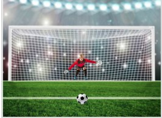
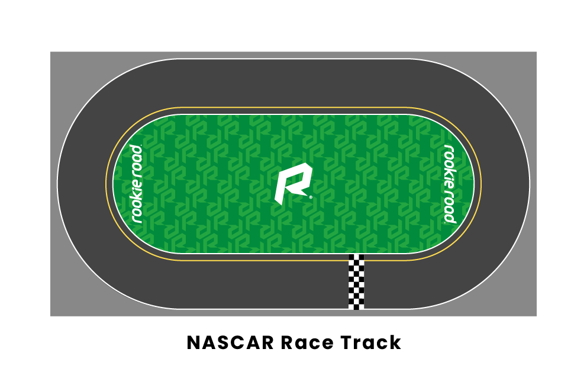
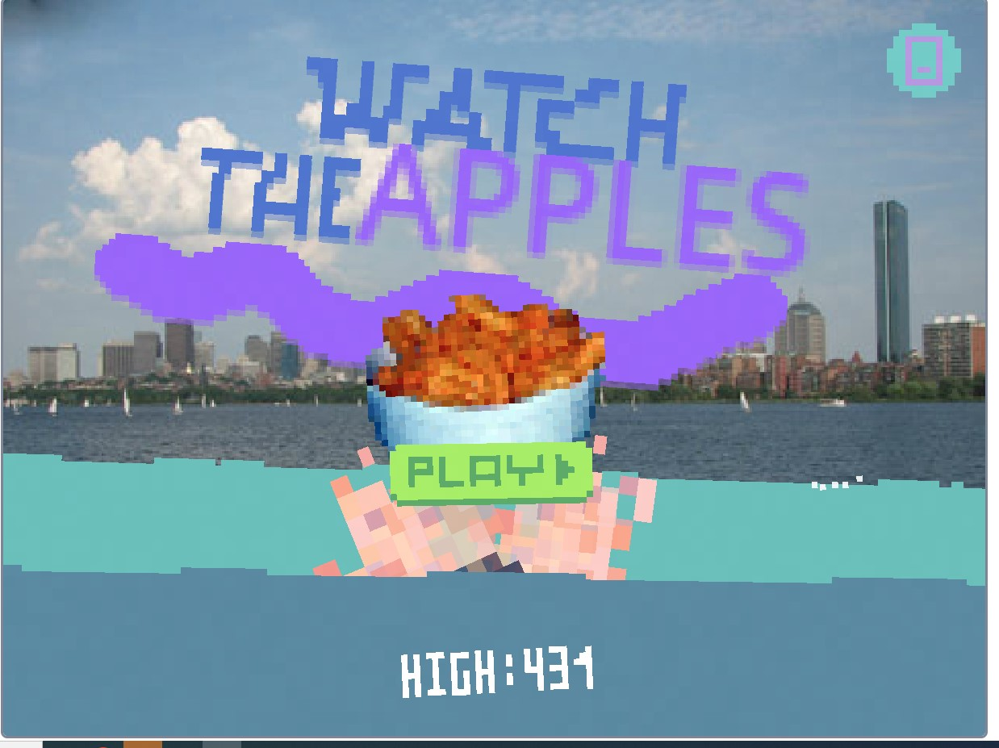
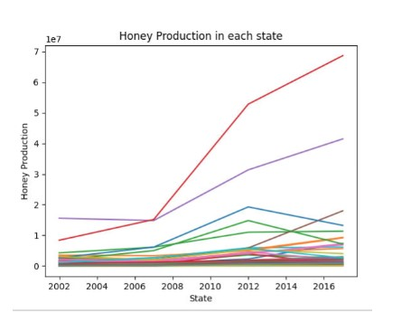
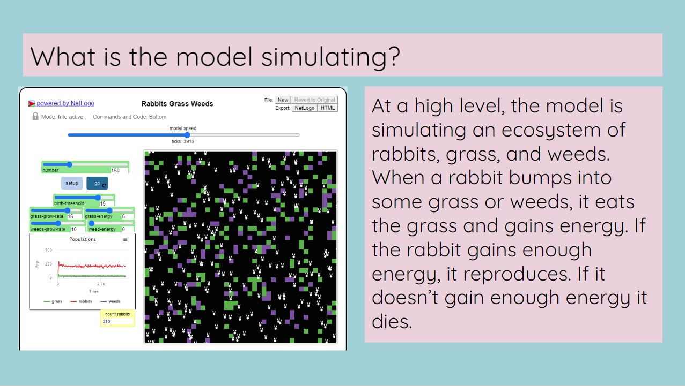

Home
Portfolio
About Me
This is my Portfolio Page!

This is my group's first project.For our game we decided to make a penalty shootout. You can pick where you want to kick the ball and a CPU will decided where it wants to block. First one to 5 points wins.

this is my second project called nascar racing. We created a game where you move around a nascar around a track with the arrow keys. We walso added a timer and a track in the background to make it more realistic.
Second day scratch project.

This game was a remix of Watch the Kraken where you avoid getting apples in your cowl of cheesey poofs. The hands will come up from the ater and try to grab your bowl and if the hand touch you the game is over. You have 3 lives in total.
3.2.4 Project.

This is one of our plots we created during the 3.2.4 project.
4.1.4 Project.

This is our simulation and slide from our 4.1.4 Project.
Using App Inventor to make app game Duck Hunter.
Interactive Fiction Rags to Riches.
Black Jack game written in Python.
Modified bits in pictures.
Use data files to create graphs.
Using netlogo do remix of illusions.
Interactive Fiction Rags to Riches.